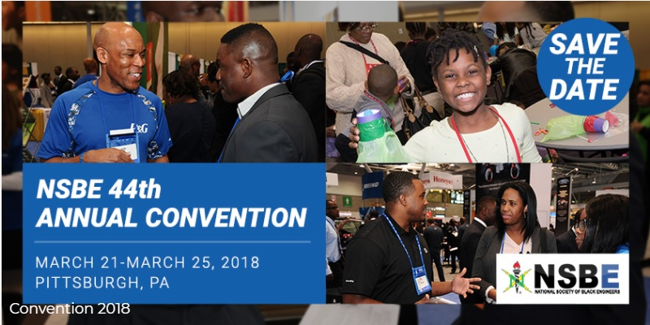

| Homepage | About | Events | Gallery | Community Board |
To increase the number of culturally responsible Black Engineers who excel academically, succeed professionally and positively impact the community.
Our National Society Black Engineers (NSBE) chapter was founded in Spring 2013 by five passionate collegiate students because they saw a need for more representation for minority students in STEM. NSBE.has accomplished so many things this over the years with the limited resources that it had. Our chapter has over 300 members to date. This year we had 50 new members which is the highest increased membership since our installation back in 2013. Throughout the year we held social events to give students the opportunity to practice networking. We held an off-campus Christmas Party which held more than 30 NSBE collegiate, alumnae, and professional members and nonmembers. Former Vice President Marciana Davis and former President Jamiah Braithwaite started a Peer Mentoring Program which consist of fourteen students. For our last general body meeting, we partnered with CODE2040 to get ESPN to visit NYIT. A panel of four engineers talked about their experiences throughout their careers.
Join us at our annual convention, March 2018 in Pittsburgh, PA. Click the image below to sign up. (Please have your NYIT username and password handy.)
